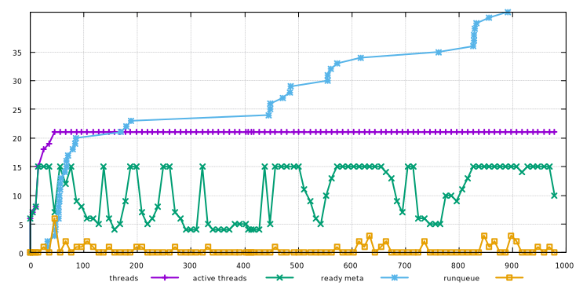

LuneScript セルフホストビルド時の go スレッド状態
Page content
LuneScript セルフホストビルド時の go スレッドの状態について調べてみました。
グラフの説明
次の図は、 go ランタイムのトレース機能(GODEBUG=schedtrace=5)を使って取得した go のスレッドスケジューリング情報と、 セルフホストビルドのモジュールの Meta 情報解析進捗状態を示したグラフです。

それぞれの値は次の通りです。
-
ready meta
- セルフホストビルドにおける Meta 情報解析が終了したモジュール数
-
threads
- go のスレッド数
-
active threads
- go のスレッドの内、待ちがなく実行中のスレッド数
-
runqueue
- スレッドが空くのを待つ go-routine 数
X 軸は時間を示し、それぞれの値の時間ごとの推移を表します。
ready meta(セルフホストビルドにおける Meta 情報解析が終了したモジュール数)
ready meta は、Meta 情報解析が終了したセルフホストのモジュール数なので、 時間経過するごとに増加していきます。
モジュール毎に規模が異なり、それによって処理にかかる時間も異なります。
グラフの角度が低く横に長いところが、 Meta 情報解析処理に多くの時間が掛っているモジュールの処理であることが分かります。
なお、Meta 情報解析終了後は .lns から .lua 等への言語変換処理を実行しますが、 今回の図には入れていません。
ready meta の処理が終了した後も threads 等の処理が続いているのは、 言語変換処理が続いているためです。
threads (go のスレッド数)
threads を見ると、起動してからすぐにスレッド数が増加し、 一定値まで増えたところで変化しなくなります。
LuneScript は、ビルド対象として与えられたパスの .lns ファイルを処理する 非同期処理を立ち上げます。 セルフホストの場合、全 .lns ファイルパスをビルド対象として与えるので、 起動時に一気に非同期処理が増えます。
active threads (go のスレッドの内、待ちがなく実行中のスレッド数)
active threads はかなり増減していることが分かります。 ビルド中に出来るだけ全てのスレッドを使い切ることが理想ですが、 残念ならがそうはなっていません。
理由は単純で、 LuneScript を構成する複数のモジュールには依存関係があり、 依存先のモジュールの Meta 情報解析が終らないと、 依存しているモジュールの解析を進められないためです。
ready meta のグラフの角度が低く横に長いところと、 active threads のグラフの値が低く落ちているところが一致していることが分かります。
これは、 あるモジュール A の Meta 情報解析処理に時間がかかると、 そのモジュール A に依存している他のモジュール B の処理が モジュール A の Meta 情報待ちになって処理が停止し、 モジュール A の Meta 情報解析処理が終るまではその処理だけが動くことになるためです。
runqueue (スレッドが空くのを待つ go-routine 数)
起動された go routine は、 実際にスレッドに割り付けられて実行される前にキューに入ります。 runqueue の値は、そのキューに入っている go routine 数を表わします。
グラフを見ると、わずかに runqueue に変化があることが分かりますが、 active threads が低い時であれば、 次の瞬間にはキューに入っている go routine は、 空いているスレッドに割り当てられて実行されるので問題ありません。
しかし、active threads が上限になっている場合、 どこかのスレッドが空きになるまで runqueue の go routine は待ちになるため、 そこでパフォーマンスが落ちることになります。
グラフの後半を見ると、待ちになっていると思われる runqueue を僅かに確認できます。
つまり、その瞬間は CPU のコア数が足りていない、と言えます。
さらには、 コア数の多い CPU を使うことで、改善できることを示唆しています。
ただし、改善できたとしても非常に僅かだということも、グラフを見ると分かります。
まとめ
モジュールの依存関係がビルド時間に影響することは、 わざわざこのグラフを見なくても論理的に分っていたことではありました。
では何故今回このグラフを生成したかというと、以下を確認するためです。
- 自分の想定した通りに go routine がアクティブになっているのかどうか？
- アクティブになった go routine が、直ぐにスレッドに割り当てられているのかどうか？
これは、 active threads と runqueue の関係について見ると分かります。
そしてそれらは、ほぼ想定通りだということが分かりました。
少なくとも、 コア数が影響して実行待ちになっている go routine はほとんどない ので、 それが影響してパフォーマンスが悪くなっている、 ということはない ことが分かりました。
ただ、そもそも今の LuneScript の非同期処理数は、 現状の環境(コア数)に合せて調整してあるので、ある意味で辺り前の結果かもしれません。
現状とは異なる環境で動かした場合、次のことが考えられます。
- いまよりもコア数の少ない環境で実行したら、 空き待ちになる go routine 数は増えるかもしれない
- いまよりもコア数の多い環境で非同期処理数を上げて実行したら、 もっと効率よく実行できるかもしれない